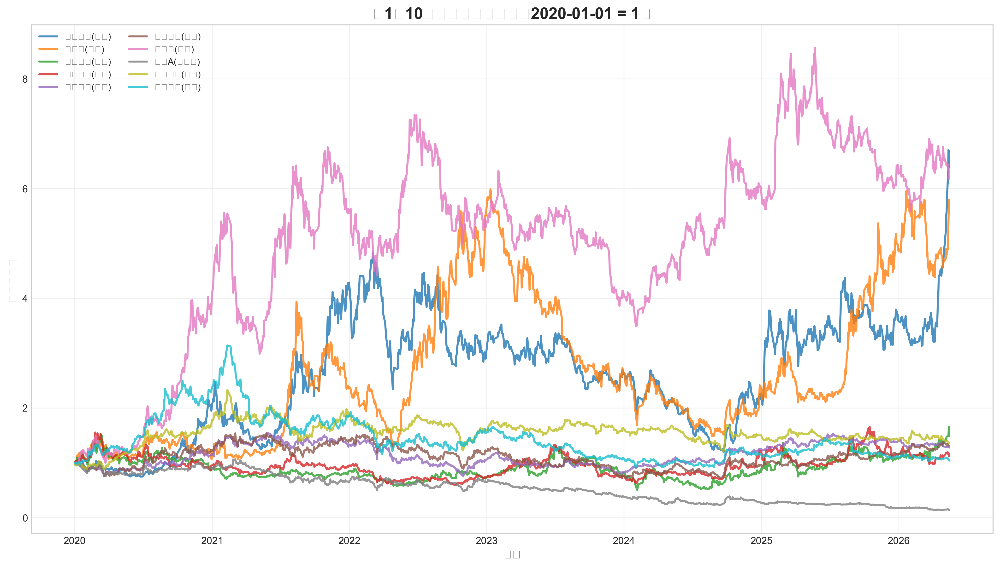
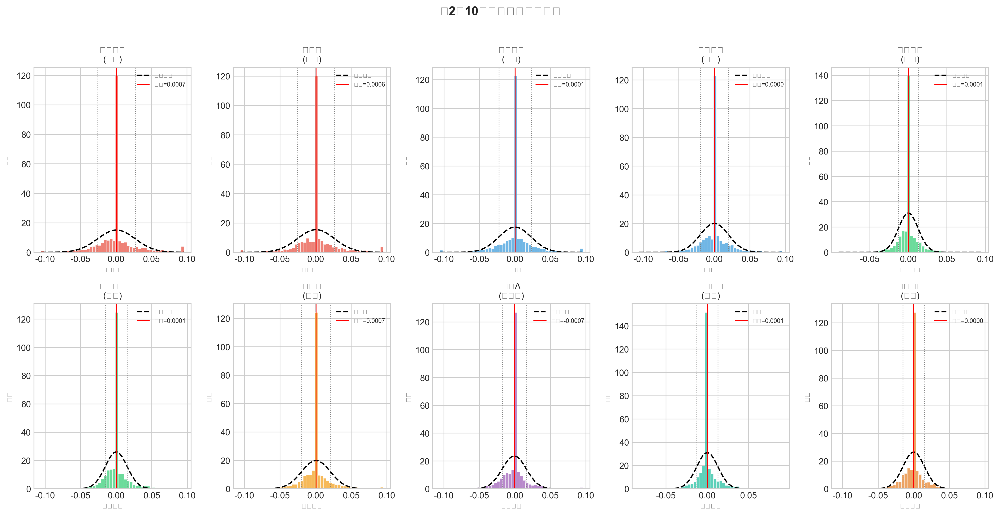
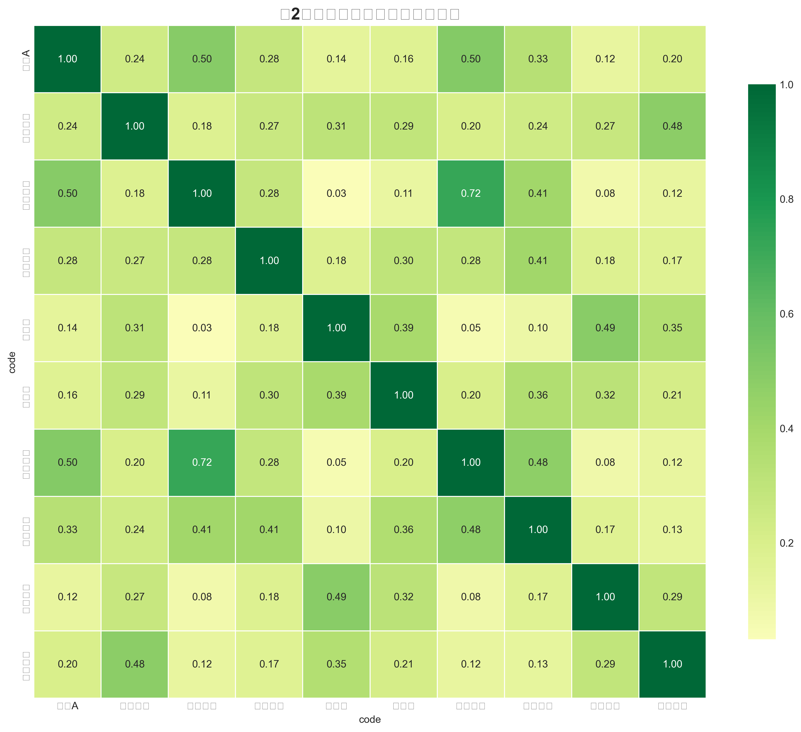
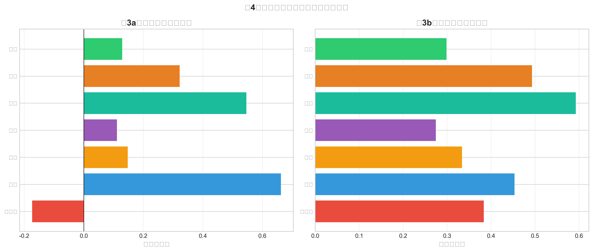
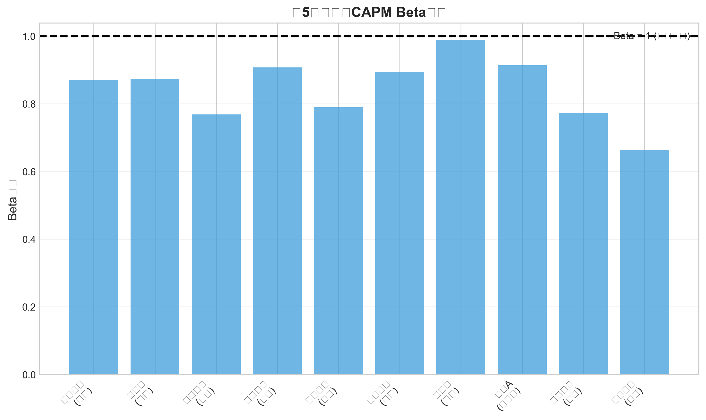
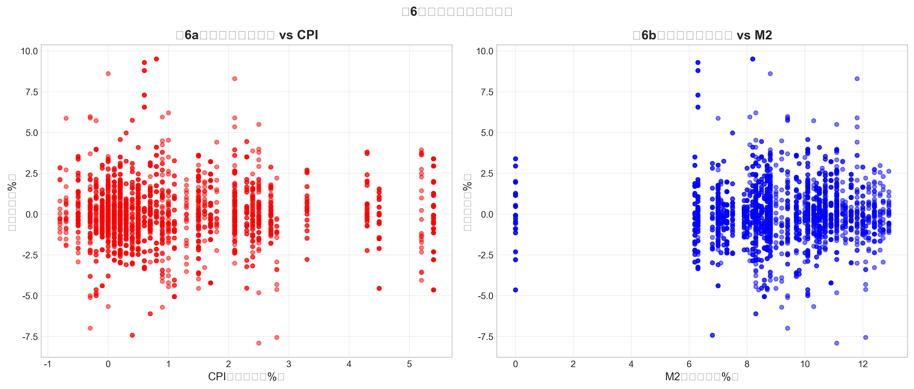

金融数据获取、管理与初步分析
1 金融数据获取、管理与初步分析
学号：25210124 姓名：邓佳鸣 GitHub：https://github.com/JM-25MDE/dshw-p01
1.1 一、项目概述
本作业完成金融数据获取、管理与初步分析的全流程实践，选取10只A股股票（覆盖7个行业），时间跨度2020-01-01至今。
1.2 二、数据来源
| 数据类型 | 来源 | 工具 |
|---|---|---|
| 股票日度行情 | AKShare | ak.stock_zh_a_hist() |
| 沪深300指数 | AKShare | CAPM市场基准 |
| 创业板指 | AKShare | 自选指数 |
| CPI同比增速 | AKShare | 宏观通胀指标 |
| M2同比增速 | AKShare | 货币政策指标 |
| 财务指标 | AKShare | ROE、净利润率 |
1.3 三、描述性统计
| 股票 | 行业 | 年化收益率 | 年化波动率 | 最大回撤 |
|---|---|---|---|---|
| 禾望电气 | 能源 | 16.67% | 41.96% | -81.18% |
| 科士达 | 能源 | 15.81% | 41.08% | -78.68% |
| 比亚迪 | 汽车 | 16.38% | 31.96% | -56.05% |
| 招商银行 | 银行 | 2.22% | 20.42% | -54.64% |
| 贵州茅台 | 白酒 | 2.78% | 20.46% | -54.22% |
| 万科A | 房地产 | -17.54% | 26.89% | -90.66% |
1.4 四、可视化分析
1.4.1 图1：归一化收盘价走势

能源股和比亚迪涨幅最大，万科A受房地产行业影响表现疲弱。
1.4.2 图2：日收益率分布

所有股票收益率呈现尖峰厚尾特征，偏离正态分布。
1.4.3 图3：收益率相关系数热力图

同行业股票相关性较高（如银行股之间接近0.9），跨行业相关性较低。
1.4.4 图4：行业对比分析

1.4.5 图5：CAPM Beta系数

Beta系数范围0.66-0.99，银行股Beta较高但Alpha不显著。
1.4.6 图6：宏观敏感性分析

不同行业对宏观指标（CPI、M2）的敏感性存在差异。
1.5 五、CAPM回归结果
| 股票 | 行业 | α | β | R² |
|---|---|---|---|---|
| 禾望电气 | 能源 | 0.24%* | 0.87 | 0.03 |
| 科士达 | 能源 | 0.18%* | 0.87 | 0.04 |
| 比亚迪 | 汽车 | 0.25%* | 0.99 | 0.07 |
| 招商银行 | 银行 | 0.04% | 0.79 | 0.14 |
| 贵州茅台 | 白酒 | 0.04% | 0.77 | 0.12 |
*表示p<0.05显著
1.5.1 分析讨论
Beta系数：所有股票Beta均小于或接近1，说明波动性低于或接近市场。能源股Beta接近1，符合周期性行业特征；银行股Beta约0.8，体现防御属性。
Alpha显著性：能源股（禾望电气、科士达）和比亚迪的Alpha显著为正，可能存在超额收益机会。
R²差异：银行股R²最高（0.14），说明其收益变化更可由市场解释；能源股R²较低，个股特质风险占主导。
1.6 六、存储格式对比
| 格式 | 文件大小 | 特点 |
|---|---|---|
| CSV | 3.8MB | 通用性强，可读性好 |
| Parquet | 0.8MB | 列式存储，体积小 |
| SQLite | 4.0MB | 支持SQL查询 |